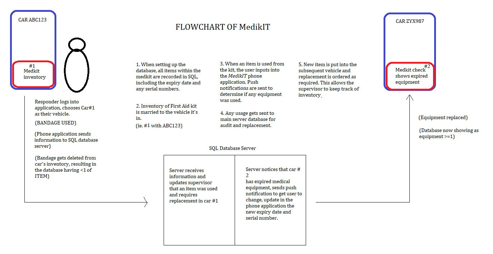

What is MedikIT?
MedikIT is a revolutionary new application designed to assist first responders, such as Police officers, Ambulance officers and Fire Fighters.
First responders encounter critical life-threatening emergencies every day and are subsequently trained to act and save lives with medical first aid equipment, which is usually located within a First-Aid trauma Kit, found usually within their vehicles.
Every workplace by law must have access to a fully stocked and accessible first aid kit (Abrahams, 2022), which is certainly the expectation of first responders.
MedikIT, is there to assist first responders and supervisors keep track of what equipment is available within their kit at any time at a glance and will provide these responders the tools to update the inventory of what's been used in real-time.
As such, MedikIT acts dually as a digital auditing tool of medical equipment as opposed to traditional pen and paper auditing methods.
Why is this project important?
Having been a first responder in the past, I can speak first-hand how frustrating it is to respond to a life-threatening emergency, from someone with a serious bleed via an assault to someone having a nasty asthma attack, only to realise that someone hasn't replaced a specific piece of first-aid equipment.
Mistakes such as neglecting to replace these items could result in potential preventable harm.
From my initial research, I have found that there are no real standardised workplace digital auditing systems for first aid within these workplaces and is instead governed by self-checks and external third party audits, such as through organisations such as Colmed Group (Colmed Group, n.d).
MedikIT will be the first to communicate records of the first aid inventory to the SQL server, accessible by a supervisor, to know when items require replacing, which is important in keeping in line with regulations of having the items checked and replaced regularly. (Worksafe Australia:10 2016)
Here’s how MedikIT works:
MedikIT is programmed in Java to allow ease of communication from the employee’s work mobile phone to the main SQL server database. The Java application will communicate directly with the SQL server by use of a Microsoft JDBC Driver (Snider, 2021). A JDBC driver, also known as Java DataBase Connectivity, allows connectivity from a Java platform to the SQL server. (Microsoft, 2022.)
As first responders typically are granted a specific work phone, such as every employee having an iPhone or Android device, it is fair to assume that this software will work on all mobile phones of the same OS and version.
However, if I were to want a hybrid format for iOS and Android, I might consider using C# programming and a Xamarin framework (Chebbi, 2022) as opposed to Java, which is designed solely for Android systems.
Upon purchase of a new first aid kit, all items within are documented within the database via SQL programming. Here, the medical equipment is given a SELECT value and a COUNT value, and if applicable, an expiry or DATE value. (Eg, 1x Ventolin 100mcgs, expiry 20/09/2023.) This database will then assign the entirety of the items within this bag as an individual serial number, and assign it to its destination, such as within a first-aid office or motor vehicle. For example, Medikit#1 within car #1 (ABC123).
The software of the MedikIT application will communicate directly with the main server and be updated of any change made to the database.
For example, User 1 used an EpiPen on a patient - The user having logged into the application at the start of the shift will select what car they’re using, ie, Car#1 via their application, and select the EpiPen item as being used. This sends information to the server that the item is no longer available in Car#1, resulting in both a notification within the database to the supervisor that Car#1's EpiPen needs replacing and also an update to the server that ID *EPIPEN#####< 1 for Car#1, allowing all future users of Car#1 to see that the EpiPen is not within the first aid kit.
From here, the employee:
- Can complete an audit of the medical equipment from within the app, and;
- Confirm that all medical equipment is accounted for and send the result directly to the database as having a successful audit as per WorkSafe regulations, and;
- Have information at a glance of what items are missing from the first aid kit and ensure they replace and update the application database.
An aspect to consider for potential fallbacks is a matter of human error. For example, what if someone records the bandage as a different type, or enter the wrong serial number in entry? However, with the digital audits taking place through the application, I imagine that this would get fixed early.
Technologies and skills required for this project:

This technology will require hardware such as a relatively inexpensive PowerEdge R350 Rack Server (Dell, c.d 2022), or the usage of an already installed server. Having a separate server hosted by a virtual machine may allow other stations or hospitals or brigades the ability to access to each other, allowing for centralised monitoring of equipment from within a central IT server room or general management role.
We also need to consider that the data being transmitted will be likely sent via a VPN.
There are matters that may impact the success of the database and application software, such as hardware failures and power outages. However, it’s good practice for the workplace to use an Uninterrupted Power Supply (UPS), such as a backup generator. Hardware failures will require replacement or repair by IT professionals.
The software will need to be developed by an experienced Software Engineer or developer, as the software will need to be developed securely and professionally. A software engineer’s average salary in Victoria, Australia is around $105,000-$125,000 per annum. (Seek n.d). As most government agencies might already employ an IT or Software engineer, this might not necessarily be a new expense, but the development of MedikIT may not take priority unless protocol demands an improvement in auditing of First-Aid kits and any push-back by employees.
Experience in programming software based on Java, Swift or C# for cross-platform support will be a must (Chebbi, 2021) along with experience in hosting and maintaining a server on a virtual machine. They also will need to know how to program with SQL and how to troubleshoot situations that may arise with stock control and replacement.
Outcome of project:
I believe that with the use of the MedikIT application, and with the appropriate design and upkeep of the database and software, that this application can help prevent mistakes resulting in lives lost whilst also doubling as an auditing tool for organisations.
There is large potential for this software to also be catered for usage in other vocations, such as within an office complex or physical activity complex, such as a gym or amusement park. Upon successfully updating the software for these kinds of organisations, we may see future success in having a fully audited and automated digital first aid system. There is a clear break in the market for a product like this, which allows for untapped potential and design to cater and respond to rising threats for specific worksite requirements.
Figure 5, top right, Photographer Unknown, Amazon Trunab First Responder Bag, located at https://www.amazon.com/Trunab-Responder-Backpack-Emergency-Firefighters/dp/B08JGPHD44
Figure 6, middle of page, created by author Jake Bone 2022.
Figure 7, bottom left, Artist Unknown, DBMS: Database Management Systems Explained, located at https://www.bmc.com/blogs/dbms-database-management-systems/